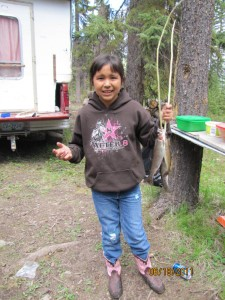
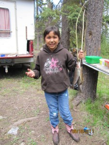

.jpg "This is She'aytkw (left), Isabella's horse that Travis gave her.") 

.jpg "Isabella with her younger sister Laurenda at the Yvonne Basil Memorial Powwow.")
So I asked my sister Dion to write something, and this is what she came up with. It is quite the read, please take your time.
She is the oldest grandchild on her maternal grandmother's side of the family. She was my firstborn baby, she was an only child for 11 years. She is the oldest sister with 3 younger sisters. Eventually, later in her teens, she is from a blended family of 7, which made her the second oldest. I was a young mom and then eventually a young single mom raising Isabella. She shortly attended Coldwater school, then Lower Nicola Indian band school, Nicola Canford elementary and eventually Merritt Secondary and Okanagan College. These 17 years have gone by so fast.
It will be a challenge to think of just the right thing way to explain what I'm feeling as a mom. A start to her adult life. Everything you have accomplished academically while you were at school this moment the person she has become since leaving high school to leave for college. That's what fills up my heart today and making the tears fall. The willingness to discover your best self.
In these years so many things have happened to help me prepare for this milestone in her life where she leaves the nest and starts her journey and opens a new chapter in her life. Going from learning to walk, singing the alphabet song and counting, fishing, hunting, trips, competitions, riding steers, and horses and attending college.
As a mother, I can't be any prouder than I already am. I cannot take full credit as her to getting her here. She has had her grandma and papa, her uncles and aunts that had their share of raising her and watching her grow. Isabella was raised in Shulus.
Isabella found out soon that ballet was not for her. In high school, she learned that she didn't like basketball, nor volleyball. She showed a passion for riding her horse, shooting her rifle which took her to places. She showed true grit to get herself there with a dedication to practice, competing in different towns against young men and women.
Isabella liked to try new things, had opportunities to go places. Her 22 small-bore rifle shooting has taken her to Campbell river, Abbotsford, Toronto for either provincial or Nationals, representing Team B.C from the North American Indigenous Games held in Toronto. She was one point shy of taking silver home, being a member of the B.C team for Kamloops for nationals that were held in Toronto which she took Gold and Silver home. Provincials she has taken gold and silver and bronze. Going from a beginner to Novice to expert shooter from 2016 to present. She has recently submitted a letter of expression to attend NAIG 2020 which is being held in Halifax this year.
Family vacations to Disneyland, and Las Vegas, Nevada. We were able to drive both times and both times going through the different routes. Seeing the Oregon coast, Redwood National Park. Toronto, seeing the Niagara Falls through NAIG and her Nationals competition.
Isabella sets her mind to something and follows through with determination. She wanted to finish high school early, she did it. On and off the Honour roll, Staying in the A and B range in most subjects and C average in stuff that didn't catch her interest. She had the opportunity to finish early to attend college. It all seems surreal, she hasn't celebrated her graduation day yet and is already in her first year of college for welding.
I harbour regret as a working mom, missing school things, to riding, movies, school field trips, the times I lost my temper after a difficult day at work. Feeling shortchanged from working too many hours or sharing too little downtime. So much into one child doing my best to focus on her. Moving on with new adjustments and adventures. I hope that she remembers to not accept what other people expect of her, to explore all options and do what she finds fulfilling. Life never goes as exactly as planned, but that's ok. For some, its lessons learned from juggling parenthood and careers. Motivation to appreciate the career and life choices, and to look ahead. the ultimate reward of working motherhood will be to watch my daughter pursue her passions. To marvel where the journey takes her in life. Feeling grateful and blessed for having a daughter like her. Thank you for taking these chances on yourself and believing the sky is the limit. Thank you for being willing to fall and fail and screw it up before you get it right. Thank you for doing what any parent hopes their kids would do with this experience. You did the work and achieved it. I love your talents and achievements are many, I am most proud of your compassion and empathy for others. Blame others for your success because no one can accomplish great things alone. Thank you for not living a linear life thinking you have to do things society thinks you should do. The people in your life will walk beside you if they love you. You owe your family nothing for being alive, your family will come to your rescue and you to theirs. Being your mother has been my greatest joy.